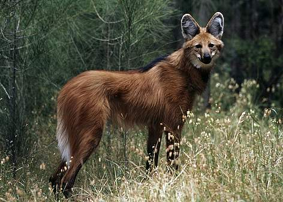

The Maned Wolf (genus Chrysocyon) is a canine which resembles a fox or wolf, but is neither. Primarily found in South America, the Maned Wolf is the largest canid in its region, and the only member of its genus.The Maned Wolf is "Near Threatened" in conservation. This animal has a foxlike head with reddish brown fur.
